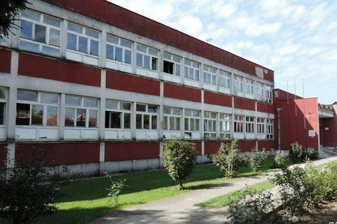

Мехмед Меша Селимовић, рођен је 26. априла 1910. године у Тузли, у Босни и Херцеговини, од оца Алије и мајке Паше. У Тузли је завршио основну школу и гимназији. Људи који су га познавали знали су да Мехмед много воли да чита. Био је опчињен и заљубљен у стваралаштво Фјодора Достојевског , под чијим утицајем је Меша касније писао. Љубав према књижевности и уметности га наводи да упише српско-хрватски језик и југословенску књижевност на Филозофском факултету у Београду. За време студија боравио је интренату муслиманске културно-просветне заједнице, која је подстицала младе муслимане на даље школовање. У том периоду његови пријатељи су му доделили надимак Меша, којим је својевремено почео да потписује своја дела. Дипломирао је 1934. године.
Сарадње са НОП -ом одводи га у затвор 1943. године. Након ослобођења враћа се у своје родно место где постаје члан Комунистичке партије Југославије и политички комесар Тузланског одреда. Његов брат наредне године је осуђен на смрт.
У Грађанској школи током 1936. године, радио је као професор. Та школа данас носи његово име. У Сарајеву живи од 1947. Тамо постаје професор Више педагошке школе и доцент Филозофског факултета, уметнички директор „Босна-филм“, шеф драмске секције Народног позоришта, као и главни уредних издавачке куће „Свјетлост“.Меша је био учесник НОБ -а па је и због тога провео неко време у затвору. Такође, познат је као директор Сарајевског универзитета и као председник Савеза књижевника Југославије. Био је редовни члан САНУ и АНУБИХ .
Селимовић је одмалена упознат са причом о деветорици браће од којих су двојица, један Селимовић, један Овчина, морала да преузму „непријатељску“ веру како би заштитили породице осталих. Њима вера није представљала неку битну улогу и само им је било битно да преживе. Није прошло ни двеста година, како писац наводи, односи су замрли и нестали. Свако се отуђио и породица је брзо заборављена. Меши су многи замерили када је наглашавао да његово порекло води од хришћана. „Многи од нас тачно знају своје хришћанске претке, и могли бисмо да покажемо и директне документе. Али чему то? Шта бисмо тим помињањем постигли?“, биле су једне од многим замерки на рачун Мешиног интересовања са своје порекло. Он је сматрао да људи само желе да сакрију истину и измене догађаје који су се издешавали. Вероватно нико од тих људи није могао да прихвати чињеницу да су због недостатка храбрости обезвредили своју веру и свој народ. Неки извори тврде да се Меша дружио углавном са Србима и тиме покушао бар на неки начин да прати своје „првобитне етничке воде“. О Мешиним коренима можемо да прочитамо у његовом аутобиографском делу „Сјећања“, у ком на самом почетку наводи да долази из Билећа и записује причу о деветорици браће.
Меша на самом почетку писања својих мемоарских проза које представаљају већ поменуто аутобиографско дело, наводи разлоге записивања своје прошлости. Наиме, један млади новинар је желео да са Милошем Црњанским, Михаилом Лалићем, Ивом Андрићем и Мешом Селимовићем разговара и запише њихове разговоре. Сви сем Андрића су пристали и састанак је уговорен. Разговор је искуцан на око тридесетак страна. Послат му је на проверу из разлога да не би нека лаж била пуштена у јавност. Црњански се распитивао у редакцији када ће разговори изаћи у новинама. Сазнали су да ће они бити објављени постхумно. Селимовићу се јавила велика жеља да својим речима забележи опажања из приватног живота. „Зар није боље сам да напише оно што знам, него да други, кад умрем, пишу о мени оно што не знају, а ја у гробу жив да се поједем што никоме не могу да одговорим по заслузи“, рекао је Меша. Други разлог за писање је био ослободилачког типа. Како и сам наводи, желео је да ликвидира у себи стално присутно жариште и извор сећања, како му не би сметали у даљем развијању уметности. На питање колико у његовим делима има аутобиографског, говорио је да једино о себи и зна да пише. Он идентификује своју личност и личност људи који га окружују са својим ликовима из романа. Сам процес свих потиснутих осећања која су у њему тињала и једва чекала да се испоље, највише су ескалирала у књизи „Дервиш и смрт“ , која важи за његово најзначајније дело. Лепота реченица и сав смисао извучен из емотивних несклада нашег писца су дала прави смисао његовој уметности, он је тако приказао ширину свог стваралаштва.
„Србин је славно бити али и скупо“, говорио је Меша. Он се током своје каријере стално мимоилазио са ставовима своје околине. Неки су га баш често осуђивали због истицања свог порекла, а неки си покушавали да га припишу искључиво муслиманској књижевности. Све се ово мења када Селимовић упућује писмо 3. новембра 1976. године. Српској академији науке и уметности. Захтевао је да се ово писмо узме као важећи аутобиографским документом. Кроз своје време стварања, као што сам већ напоменула сусретао се са многим препрекама. Није видео себе и остале књижевнике као тему расправе о националном књижевном благу. Сметало му је разврставање стваралаца према националном, републичком па чак и покрајинском основу. Изласком „Српске књижевности у сто књига“ 1972. године, се на списку нашао и Селимовићев дервиш. Он је због позитивних или негативних критика написао ово писмо у ком потврђује да себе карактерише по националности као Србина који потиче из муслиманске породице. Подједнако је поштовао и порекло и опредељење. У исто време био је пресрећан, јер се пронашао међу знаменитим писцима тог доба. Овај списак књига био је потврда његовог досадашњег рада и труда. Писмо упућено САНУ, ставио је тачку на све расправе о његовој, како књижевној тако и етничкој припадности. Писмо у целости прочитајте овде.
Живот су му обележила два брака, са његовом првом женом Десом и његовом првом љубави Дарком. Док је био у партизанима зближио се и заљубио са Десанком Ђорђић, лепом професорком гимнастике. Она је долазила из познате партизанске и комунистичке породице, чији углед јој је касније помогао. Њих двоје се венчавају 1943. године, а исте године им се рађа ћерка Слободанка. Њихов брак је на први поглед изгледао као складна и лепо изграђена заједница. Међутим, Меша своје немире није могао тако лако да сакрије од очију других, између њих није било све баш тако дивно као што је представљено. Више су се слагали као пријатељи него као супружници. Није прошло много времена од склапања брака, Меша је почео да „бежи“ од куће под изговором да обавља партијске задатке. У једном бегу, упознаје Дарославу Божић, ћерку официра краљеве војске и удовицу краљевског официра. Меша и Дарка су се заволели на први поглед. Нису дуго могли да крију своју заљубљеност па је наш писац убрзо жени Деси признао своју забрањену љубав. Деса је сву љубав према Селимовићу преточила у мржњу према његовој новој љубави, те је етикетирала Дарку као „браколомницу, буржујку и неморалну жену која отима туђег мужа и одваја истог од своје породице“.Такође, гневном испуњена жена, повукла је све своје везе и довела Мешу пред комунистички суд пред којим је одговарао на недолична питања везана за његову аферу са Дарославом. Било је незамисливо да комунистички настројен човек заволи или има нешто са девојком која потиче из породице која је служила краља. У својим „ Сјећањима“, Меша описује овај тежак период свог живота и овековечава Дарку. „Да она није била поред мене, у животу не бих урадио ни дијелић онога што сам урадио. Без ње бих сигурно био ситан професор или средњи партијски руководилац (што не би била никаква трагедија, констатујем само чињенице)“, (Меша Селимовић, „Сјећања“). По други пут доживљава издају од стране Комунистичке партије (први пут су му осудили невиног брата на смрт) искључењем из овог покрета. Он са Дарком, која је једна од омраженијих личности Београда у том моменту, одлази у Сарајево. Тек после годину дана је успео да се разведе од Десе и ожени Дарку. Знао је да је ова љубав вредна борбе. Често су били гладни и нису имали услове за живот, ипак били су срећни у свој тој несрећи. Из ове љубави добија две ћерке, Машу и Јасенку. Селимовић наводи да је писао искључиво ноћу. Дарка је све време седела поред њега, нешто читала или хеклала. Након завршених поглавља, саслушавала је пишчеве речи и критиковала их. Његовој вечној љубави посвећује књигу „Дервиш и смрт“ која излази 1966. године. Због немогућности да поднесе осуде околине, заувек напушта Сарајево и сели се у Београд. Тек овде, овај брачни пар живи у миру и ван маргине. Доказ ове вечне љубави је и сама прича о ноћи 11. јула 1982. године када нас је писац заувек напустио. Матија Бећковић је рекао како су оставили Дарку насамо да се опрости од Меше док не дођу службена лица и не однесу тело. Ујутру Матија је затекао Дарку поред, још увек неоднешеног тела. Она га је погледала и рекла: „Да сам знала да неће доћи целу ноћ, легла бих поред њега, грлила га и љубила, да уз њега одсањам последњу ноћ“.